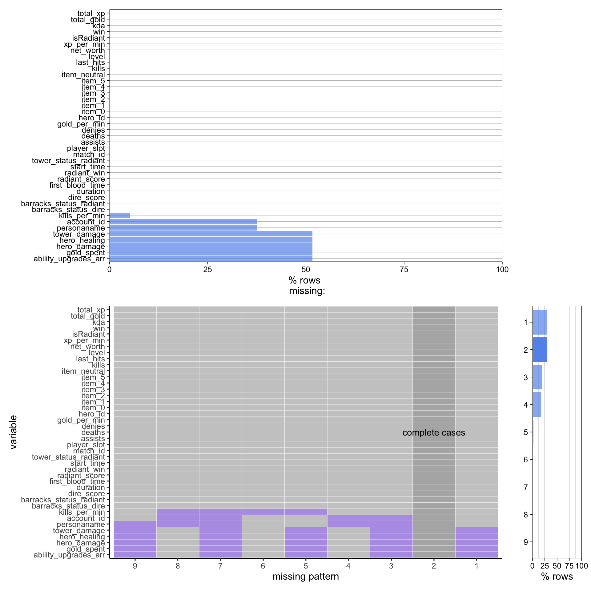

2 Data
2.1 Technical Description
The data source we chose is OPENDOTA, a third-party, open-source data platform that collects data from Dota 2 games. It includes information concerning player and match statistics by leveraging the Dota 2 API provided by Valve, the parent company of Dota 2. Over five billion matches are stored, and matches can be accessed through the API within hours of their completion.
There are approximately 16 quadrillion possible drafts, and 500 million ways to order the heroes in any given AD game of Dota 2. This ensures that no AD match is exactly like another. In our analysis, we will evaluate the effectiveness of each ability across a small subset of these matches.
We compiled our dataset by we querying the OPENDOTA API to obtain AD matches. Matches are accessed using a “match_id” parameter. The easiest way to obtain a match_id is to query the API with a ‘player_id’, which fetches the matches that player has played. We used a few additional parameters to ensure that the match was the AD game mode. Unfortunately, there was no way to query the API to receive a match_id independently of a player, so the matches in our dataset were accessed with a player_id 74152970.
The response from the API upon requesting a particular match_id is a JSON object containing information pertaining to the match. For example, keys in the response indicate which team won, how long the game was, the total scores of both teams, the chat-log of the game, and the players present in the game. Each of the ten players are nested within the player data, and have their own keys such as their abilities, their number of kills, their total gold earned, and what items they owned.
We chose to format our data so that each row represents one player in one match. The columns include the general data from the match as well as the individual player data. In the raw responses, we noticed dozens of fields consistently being left blank. However, most of the information we aimed to collect was preserved and we selected a total of 41 fields to preserve for each data entry, giving us plenty to work with.
Some data, like the abilities and heroes, are stored as integers rather than names. As a result, we will have to transform these values according to a key that we have obtained from the API. Additionally, a player’s abilities are actually stored in the order in which the player leveled the abilities up. We will need to parse which abilities a player actually has from this list, and decide whether or not to preserve the leveling order. This also raises the edge case of a player having an ability but never leveling it, which—although possible—is incredibly rare.
We performed our data compilation in Python and wrote the modified responses into an external CSV file, which we can import into R. Below is the breakdown of columns within the data:
barracks_status_dire — integer: dire barracks wellbeing
barracks_status_radiant — integer: radiant barracks wellbeing
dire_score — integer: dire kill score
duration — integer in seconds: length of the game
first_blood_time — integer in seconds: time of the first kill
radiant_score — integer: radiant kill score
radiant_win — boolean: radiant victory
start_time — integer: absolute time the game started
tower_status_radiant — integer: radiant tower wellbeing
match_id — integer: the id of the match
player_slot — integer: 0-4: radiant player order, 128-132: dire player order
ability_upgrades_arr — array (integers): order in which player leveled abilities
account_id — integer: player id
assists — integer: number of kills aided in
deaths — integer: number of deaths
denies — integer: number of units denied
gold_per_min — integer: gold accumulated per minute
gold_spent — integer: gold spent
hero_damage — integer: damage dealt
hero_healing — integer: healing provided to teammates
hero_id — integer: id of the player’s hero
item_0 — integer: id of item 0
item_1 — integer: id of item 1
item_2 — integer: id of item 2
item_3 — integer: id of item 3
item_4 — integer: id of item 4
item_ — integer: id of item 5
item_neutral — integer: id of item neutral
kills — integer: number of kills
last_hits — integer: number of last hits level — integer: hero level at the end of the match
net_worth — integer: value of the hero at the end of the match
tower_damage — integer: damage dealt to enemy buildings
xp_per_min — integer: experience accumulated per minute
personaname — string, None: if available, the username of the player
isRadiant — boolean: indicates if the player is on radiant
win — boolean: indicates if the player won
kills_per_min — integer: kills acquired per minute
kda — float: kills / deaths
total_gold — integer: total gold accumulated
total_xp — integer: total experience accumulated
After processing responses for over 8 hours, we collected data from a total of 668 matches. The API was very responsive when it came to fetching recent matches, taking only a few seconds, so it is possible that older matches are responsible for slowing down the process.
2.2 Research Plan
To begin our research, we will need to do some final formatting of the data. This includes the formatting of the integer ids for several columns and the parsing of the ability_upgrades_arr column. Additionally, since most of our questions are directed at individual abilities, we will likely split each row into four separate entries, one for each of the abilities possessed by the player.
Additionally, considering the differences in what abilities are present from one game to another, it may be helpful to add a column that includes the other abilities that were available in the pool, whether that ability was picked in the draft, and whether it was against or with the ability in the entry.
Once the data is processed and cleaned, we can proceed to answering our research questions, as is outlined below:
Which abilities have the highest average win rate, damage, kills, gold, experiences, etc., and are therefore the most valuable?
We could make several bar charts plotting the average of the desired metric for an ability across the dataset. We could also create a scatterplot comparing the relationship between the two metrics and the ability.What is the relationship between heroes and the abilities selected for them?
We could look at individual hero-ability pairings while fixing the ability or the hero and display it in a bar chart. We could also calculate averages for all hero-ability pairings and search for the most and least successful, and plot those pairings. Since there are multiple ‘success’ metrics, we could also create scatterplots to plot hero-ability pairs across two metrics at a time, like gold and experience or kills and deaths.
Additionally, it may be interesting to see how common it is for particular heroes to pick an ability. We could plot a bar chart with the total number of times each hero picked an ability.What abilities are successful on the player with the most/fewest resources on a team?
We would need to filter the data to ascertain which heroes on a team were delegated large or small portions of the resources available to the team. Then, we could plot bar charts or scatter plots depicting the effectiveness or ineffectiveness of abilities based on allocated resources.How are abilities distributed between teams in one-sided/even matches?
We could filter our data for matches in which the duration was short, the kill-score was one-sided, or the difference in resources between teams was great. Then, we could track the prevalence of abilities on the winning or losing teams.Given a drafting pool and a hero, what ability should a player pick?
This is likely the most complicated of our research questions. First, we consider that that value of an ability is the sum of how much value it provides, and how much value it would provide to the enemy. To figure out which ability a player should pick in the draft, we could create facetted, two-by-five heat maps representing the players in the draft.
If a player won with the ability, we could add 1 to their tile, and subtract 1 if they lost, and facet for each ability in the drafting pool. Additionally, drafting pools that are more similar hold more predictive weight, but because there are fewer samples the more common draft pools become, the data becomes less reliable. To account for this, we could assign higher weights to more similar pools, or we could further facet the heat maps by the number of abilities held in common between the drafting pools.
If we have time and would like to do additional data exploration, we could also answer the following questions:
What is the relationship between abilities and items?
We could perform some exploratory analysis on the ability-item pairings, similar to hero-ability pairings.How do the in-game properties of heroes relate to abilities?
In Dota 2, the heroes themselves have properties associated with them, like health, armor, and mana. The OPENDOTA API also includes this information, and we could augment our data with the base values of each hero to perform additional analysis and look for trends.What abilities soak large amounts of resources but fail to win the game?
We could filter for lost games and tally the abilities present on the rich members of the losing team.Do abilities or heroes function better on radiant or dire?
We could filter the data by which team the ability was present on and see if there are any trends. There are three abilities that have different functions depending on what team they are on, and we may see some difference in effectiveness for these abilities.What abilities, heroes, and items are responsible for dealing significant building damage?
We could take the building damage dealt by a player with an ability, and tally the total building damage of all of the abilities. Depending on the results of our exploration and analysis, we may choose to pursue these questions or others. But these ideas give us a place to start when exploring the data. We hope we will come across patterns that lead to further questions that we can’t anticipate!
2.3 Missing value analysis
In the figure above, we can see the number of missing values in each column. Immediately, we notice massive values in the tower_damage, hero_healing, hero_damage, gold_spent, ability_upgrades_arr, personaname, account_id, and kills_per_min columns.
Some accounts are private and are therefore not stored in the system, which explains the missing data in the account_id and personaname columns.
The kills_per_min column has a missing value if the player achieved no kills during the course of the match, so these values are actually 0.
We are not sure what is responsible for the gaps in tower_damage, hero_healing, hero_damage, gold_spent, ability_upgrades_arr. It is particularly troublesome considering that the ability_upgrades_arr column is crucial for analysis. After querying the API for over 8 hours, we halted the process early, but it seems unlikely that that would have been responsible for the gaps. More likely, there are just gaps or errors in OPENDOTA’s data collection. Luckily, the same rows are missing multiple columns, leaving us with well over 3000 samples to begin analysis with.
2.4 Data Cleaning
Once we had obtained the raw match data from the API, we needed to transform it into a more readable and workable form. All of the information we needed on abilities was stored in one column called “ability_upgrades_arr.” This column represented the abilities in the order they were upgraded by the player, but also included other information about leveling up that we did not need. In order to filter out information on the abilities, we obtained a an ability id key from the API and used it to convert the integers into strings. The name of a player’s hero was also stored as an integer, and we obtained a similar key to decode the values.
Once we had curated the data frame, we wrote it into a CSV file. However, we realized that the data would be easier to work with if each row was split into four rows, one for each ability. We opened the CSV file back up, split the rows, and changed the column to the ‘ability’ column with one of the abilities. We also excluded any row that was missing ability data. This solved all of our concerns on missing data and left us with enough samples to perform exploratory analysis. We then wrote our data frame into a new CSV file and began our analysis.
The file in which we performed this preprocessing can be accessed here: Link